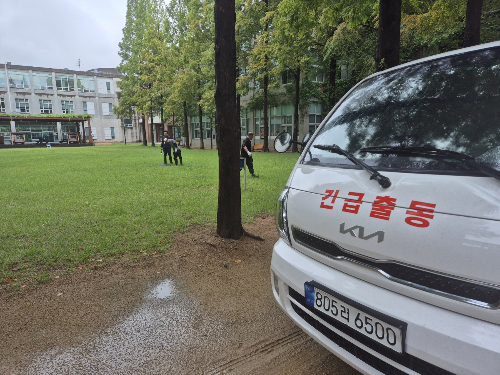
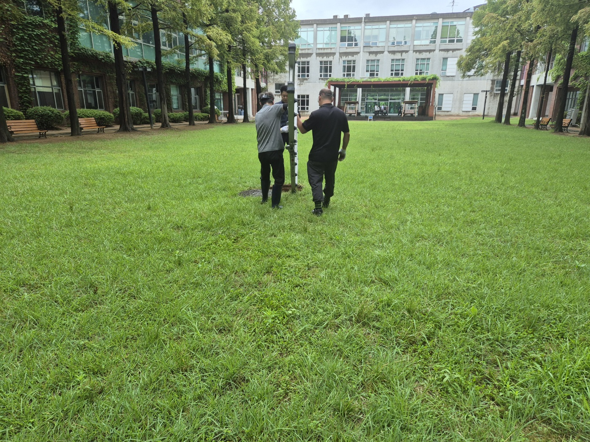
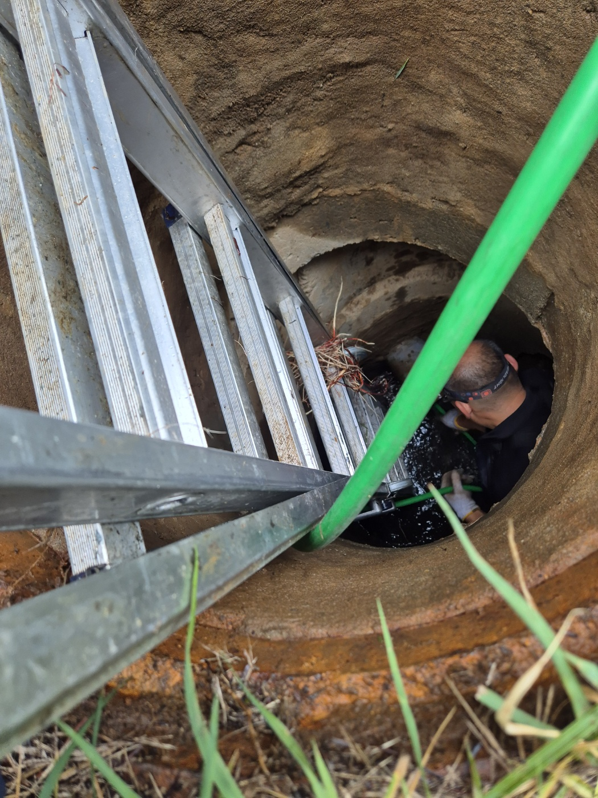
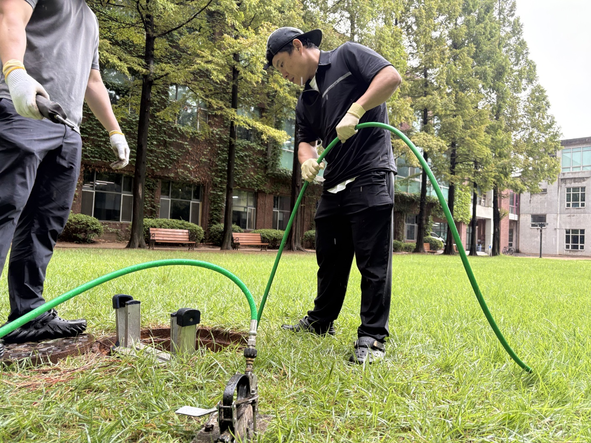
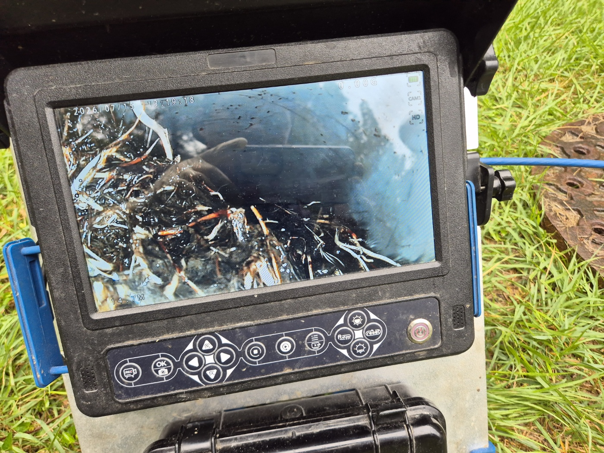
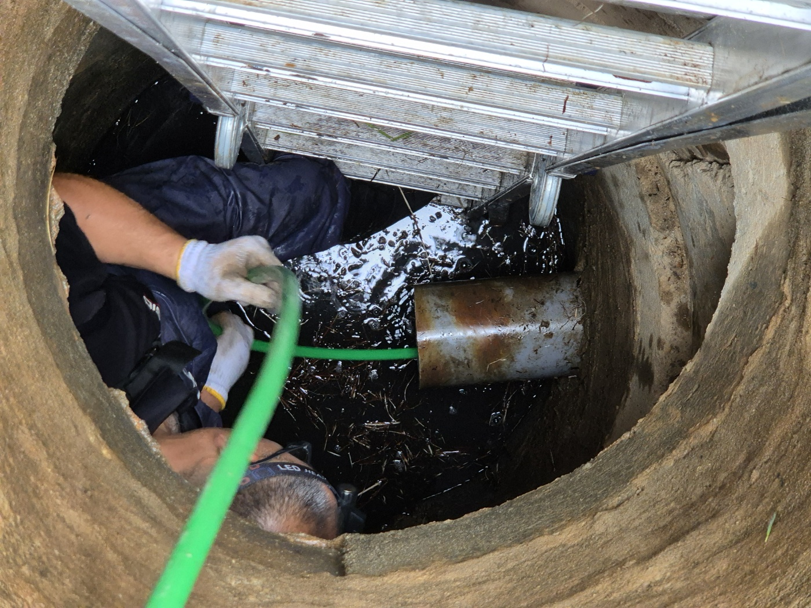
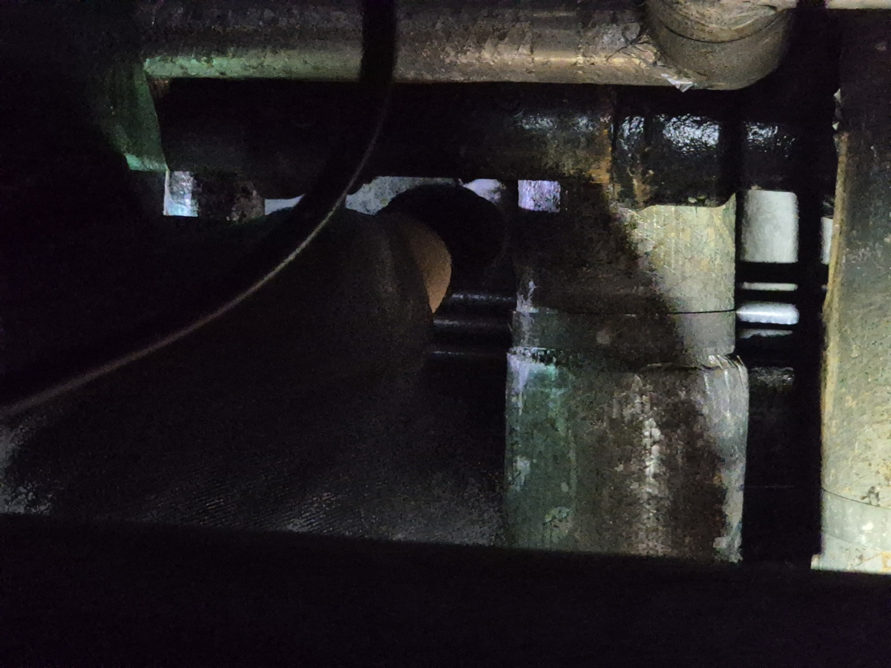
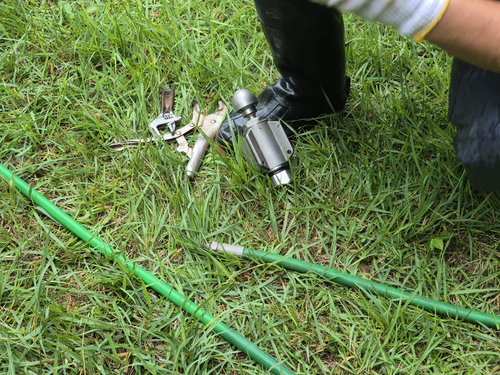
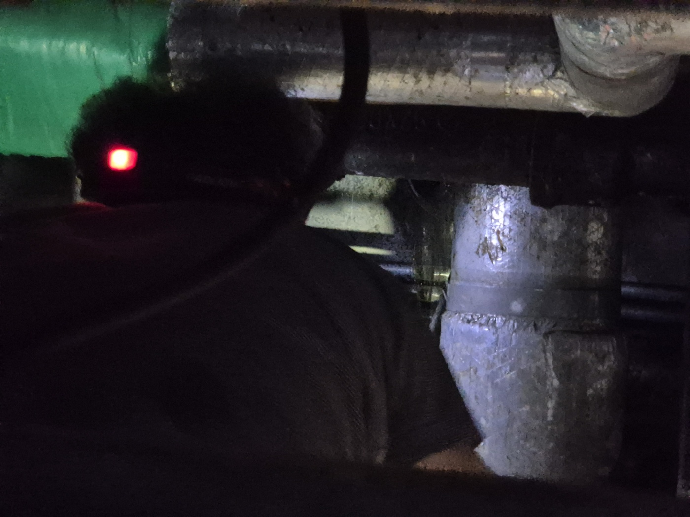

평택 및 용이동 지역 대형 시설 배관 전문 고고고설비입니다. 이번 현장은 평택시 용이동 소재 대학교 캠퍼스 내 잔디 광장 우수관(빗물 배수관)에서 집수 및 배수가 원활하지 않아 침수가 발생하는 문제를 해결한 사례입니다. 집중 호우 이후 잔디밭 하부 관로의 막힘 원인을 탐지하고 고압세척 공법으로 근본 해결했습니다.
1. 현장 도착 및 탐색 (잔디 매립 맨홀 수색)
현장 도착 후 캠퍼스 관계자분의 안내를 받아 배수 지연이 발생한 잔디 광장 구역을 점검했습니다. 우수관 맨홀이 잔디 및 토사에 덮여 파묻혀 있었기 때문에, 수색 작업을 거쳐 잔디밭 한가운데 매립되어 있던 메인 우수 맨홀의 위치를 정확히 도출해 냈습니다.


2. 배관 내시경 진단 (14.7m 지점 나무뿌리 침투 확인)
고압세척 작업 전, 배관 정밀 내시경 카메라를 관로 내부로 진입시켜 원인을 진단했습니다. 탐지 결과, 관로 14.7m 지점에서 주변 수목의 나무뿌리가 배관 이음부 틈새로 대량 침투하여 타래처럼 엉킨 채 배관 관로 전체를 폐색하고 있었습니다.


3. 맨홀 내부 진입 및 세척 준비
차량용 고압세척 장비에서 특수 고압호스를 잔디 광장 내부 맨홀까지 연장했습니다. 관로 입구가 매우 깊고 진입각이 좁은 구조였기 때문에, 작업자가 사다리를 이용하여 어둡고 좁은 맨홀 내부로 직접 진입한 후 헤드랜턴을 활용하여 고압 노즐을 배관 관로 입구에 정밀 체결했습니다.




4. 회전 노즐 특수 고압세척 작업
강력한 수압으로 작동하는 특수 회전 노즐을 투입하여 배관 내부에 유입된 나무뿌리와 퇴적 토사를 파쇄했습니다. 촘촘하게 엉킨 뿌리 뭉치를 구간별로 절단하기 위해 호스를 여러 차례 왕복 진퇴시키며 정밀 스케일링을 진행했습니다.


5. 최종 내시경 확인 및 복구 완료
고압세척 완료 후 배관 내시경 카메라를 다시 투입하여 관로 내부를 재점검했습니다. 엉켜있던 나무뿌리와 토사가 완벽히 제거되어 매끈한 배관 내벽이 드러났으며, 통수 테스트 결과 많은 양의 우수가 지연 없이 원활하게 배출되는 것을 검증했습니다. 이후 맨홀 뚜껑 체결 및 주변 잔디를 원상복구하며 시공을 마쳤습니다.
6. 학교 및 대형 시설 우수관 관리 팁
캠퍼스, 공원, 아파트 단지처럼 수목이 우거진 부지는 수목 뿌리가 배관 연결부 틈새를 파고들어 미세하게 성장하다가 폭우 시 대형 막힘을 유발합니다. 이를 예방하기 위해 1~2년 주기로 정기 배관 내시경 점검을 실시하여 뿌리 유입 여부를 사전에 파악하는 것이 안전합니다.